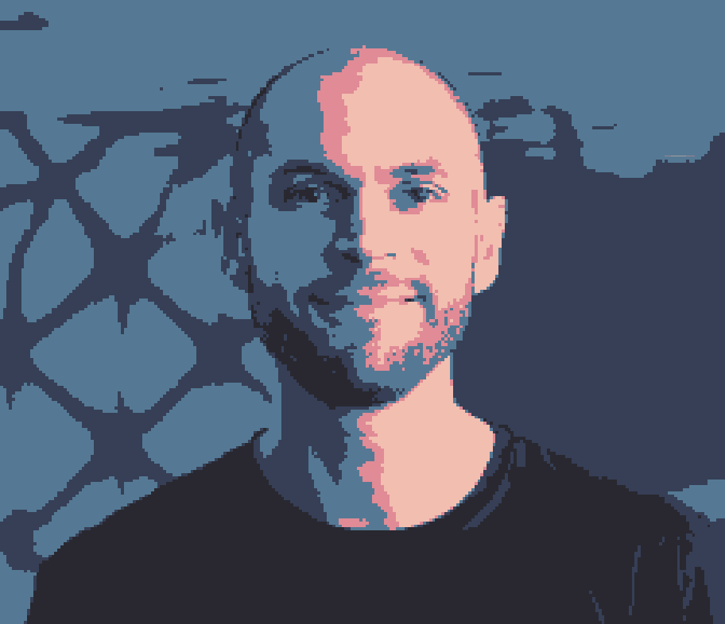

This is where I store all my side work.
I tend to open source most of the stuff I do. I still don't know why. I'm curious about mostly everything, dedicating my free time to learning and spending time with my family. On this website I also share some of my Photography through the trips I do, as well as the books I read and recommend. I like vintage electronics, programming in ASM and C for bare-metal, developing my own drones and have a professional passion for working with data.
The more the world evolves, the biggest my passion for floppy disks grows. Feel free to reach out.
| Project Name | What it is | Status |
|---|---|---|
| OPENCAS | Opensource casio f91-w board with advanced features | WIP.. Details |
| Weather Station | ATMega328P based. Send Local Weather Data to a Web Server | Done. Details |
| Thunder FC | A simple FPV Drone F722 Flight Controler | Done. Details |
| The Tropicalist | Low Ressonance 5in FPV frame for optimal flight behavior | Done. Details |
| Chewing Ideas | Get interested people to pursue an idea with you | Merged to IOTA |
| Crew of Care | Smart dogtag for location and recovery | Decommissioned |
29/06/2025: Why I Went Against the Trend Towards Py+AI and Learned Bare-Metal C
17/02/2025: Optimal Open Source FPV Drone 5 Inch Frame
11/02/2025: STM32 Pin reading high even when it's not on development boards
12/05/2024: Identifying Counts Using the DAG inside SparkUI | Spark
21/03/2024: Design & Build of a FPV Drone F722 Flight Controller
19/11/2023: KIS-DPD: A Simple Framework for Developing Data Products